Schem atic Tab
-
Schematic Tab Components on page 564 -
Toolbar on page 565 - Schematic Display Area
- Context Menu
- Attribute Viewer
- Color Settings
- Global View Window
- Status Bar
-
Print Schematic on page 570
Schematic Tab Components
Use the Schematic tab to explore a design's connectivity, the relationship of modules and instances, and design changes, such as CTS, OPT, and ECO. You can cross-probe from the Schematic Viewer to the Layout view to give you flexibility and immediate feedback to debug and diagnose your design.
You can open the Schematic Viewer in the following ways:
From the Design Browser, do one of the following:
- Select a module and click the Show Hierarchical Schematic widget. This opens the Schematic Viewer in Hierarchical view.
- Select an instance, pin, or net and click the Show Instance Based Schematic widget. This opens the Schematic Viewer in Flattened view.
- Select an MSV violation and click the Show MSV Violation Schematic widget.
- From the Timing Debug environment (Analysis Tab), do one of the following:
- Double-click to select one of the paths on the timing critical path list to open the Timing Analyzer form and select the Schematic tab to change the view to schematic.
-
Select one of the paths on the timing critical path list and click the Schematic icon at upper right corner of the path list.
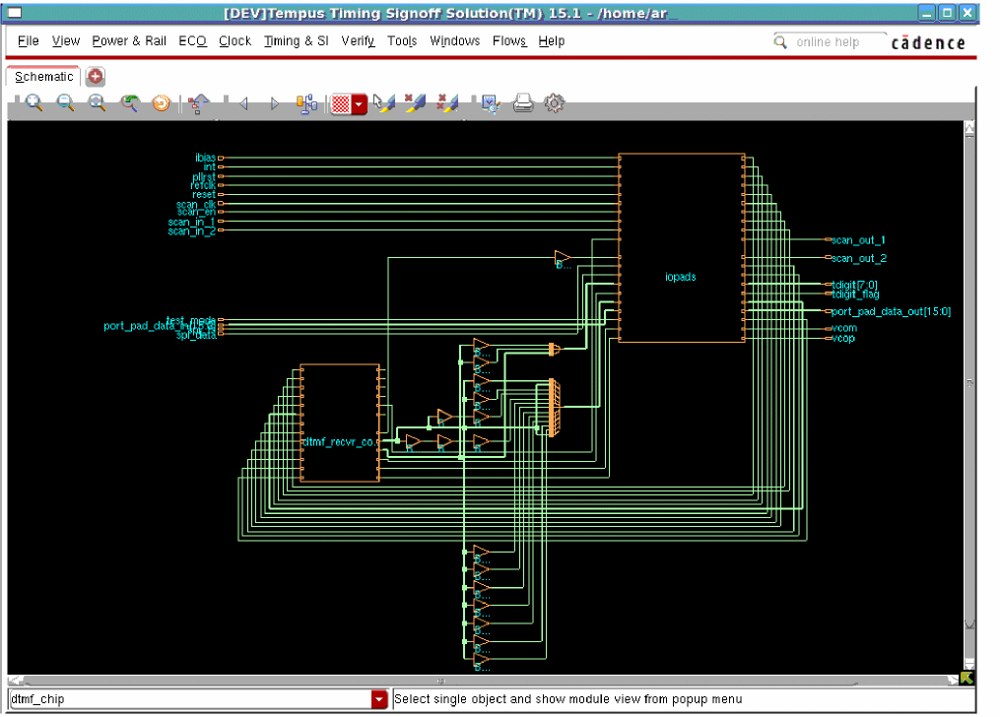
Toolbar
Toolbars provide a quick way to access the most commonly used commands. This section describes the toolbar items, which are available for flattened and module schematics, except where noted.
|
Click this widget to display a smaller area of the schematic in greater detail. Each click zooms in one level. The equivalent bindkey is Z (Shift-Z). |
||
|
Click this widget to display a larger area of the schematic in less detail. Each click zooms out one level. The equivalent bindkey is z. |
||
|
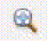 |
Click this widget to display the entire schematic within the display area. The equivalent bindkey is f. |
|
|
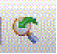 |
Click this widget to toggle the display between the previous location or zoom level and the current location or zoom level. |
|
|
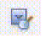 |
Click this widget to open the |
|
|
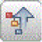 |
Displays the parent-level hierarchy. To push the view up to a higher-level schematic, select an object in the schematic display area and click this widget. |
|
|
Traces all possible drivers of the selected object and highlights them in the schematic display area. The default highlight color for drivers is yellow. |
||
|
Traces all possible loads of the seobject and highlights them in the schematic display area. The default highlight color for loads is red. |
||
|
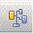 |
Traces all possible drivers and loads of the selected object and highlights connectivity from the object's drivers to its loads. The default highlight colors for drivers and loads are yellow and red, respectively. |
|
|
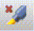 |
||
|
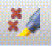 |
||
|
Opens the |
||
|
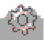 |
Opens the Preferences - Display form, which enables you to customize the schematic display settings, color, and font. |
Schematic Display Area
The schematic display area constitutes the major portion of this tab. The schematics of the selected object is displayed here in flattened or hierarchical view. To change the default display properties for objects in the display area, use the Color Settings form. You can also customize the display using the quick-access panes to the right of the display area - View Option and Color Settings.
Context Menu
To access the context menu, right-click an object in the Schematic Display Area The options available in context menu varies depending on the object you have selected in the schematic display area.
The following options are available in the context menu from the Schematic tab, which shows the Hierarchical view of schematics:
| Options | Description |
|
Opens the Attribute Viewer form from which you can select a different color for the net segment. This option is available only if you right-click a net in the display area. |
|
|
Displays next-level views for instances. This option is available only if you right-click an instance in the display area. For more details, refer to Design Browser. |
|
|
Closes a next-level instance view. This option is available only if you right-click an instance in the display area. |
|
|
Traces the previous driver of the selected port or instance pin. This option is available only if you right-click a port or instance pin in the display area. |
|
|
Traces the next load of the selected port or instance pin. This option is available only if you right-click a port or instance pin in the display area. |
|
|
Opens the form where you can change the color of the selected object. |
|
|
Traces the previous driver of the selected port or instance pin. This option is available only if you right-click a port or instance pin in the display area. |
|
|
Traces the next load of the selected port or instance pin. This option is available only if you right-click a port or instance pin in the display area. |
|
|
Traces all connections to and frTiming Debug Preferences - Select Color form a port and highlights them in the color you select in the Select Color form. This option is available only if you right-click a port in the display area. |
|
Attribute Viewer
Use the Attribute Viewer to display an object's type, name, and attributes. The contents of the Attribute Viewer form change depending on the object selected in the design.
To open the Attribute Viewer from the schematic window, do the following:
For a single object, right click on an object. The following window opens.
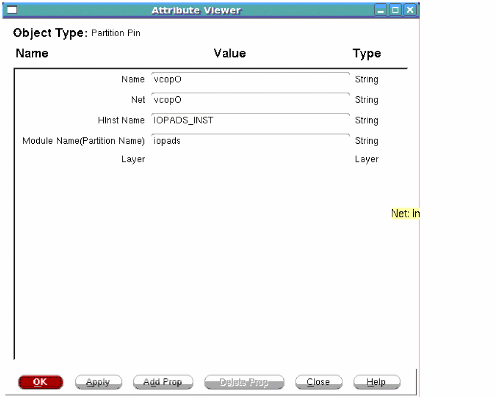
Color Settings
The Color Settings pane to the right of the Schematic Display Area enables you to change colors of object types quickly.
To change the color of an object type:
- Click the color box next to the required object type on the Color Settings pane.
- In the Select Color form, select a new color for the object type. The color of the selected object type changes to the new color in the schematic display area.
Global View Window
The global view window identifies the location of the current view in the schematic display area, relative to the entire area. The global view is identified by the pink crossbox. When you display an entire schematic in the area, the crossbox encompasses the global view window. When you zoom and pan through the schematic in the display area, the crossbox identifies where you are relative to the entire schematic.
To define a new global view, left-click and drag the mouse to create a new crossbox in the global view window.
To pan left, right, up, or down in the schematic display, right-click and drag the crossbox in the global view window.
Status Bar
The Status Bar is located at the bottom of the Schematic tab. When you select or hover over an object, this bar displays the object type, name, and ID number. If no object is selected or highlighted, the status bar displays the current view name - Hierarchical or Flattened.
Print Schematic
Use the Print Display Area form to print the schematic in the display area.
Print Schematic Fields and Options
Preferences
Use the Preferences form to change the properties, color, or font of an object in the schematic display.
To open the Preferences form, right-click on an object and click Preferences sub- menu option:
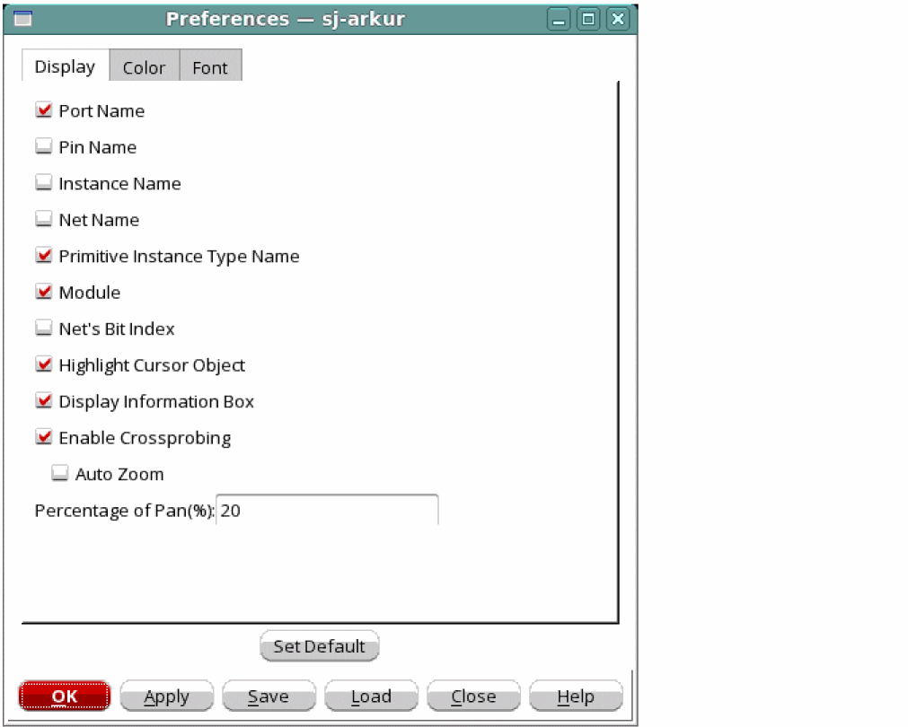
Color Settings
To change color settings, click the Color tab in the Preferences screen above. The following window opens.
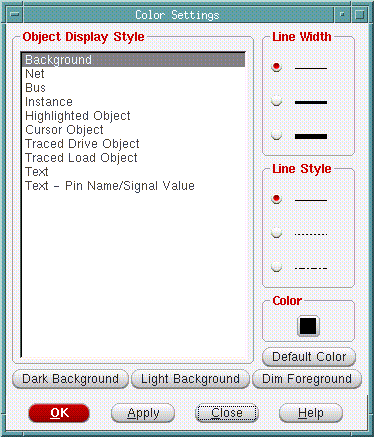
Color Settings Fields and Options
Font Settings
Use the Font Settings form to change the font size and style settings for the schematic display.
To change font settings, click the Font tab in the Preferences screen above. The following window opens.
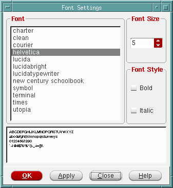
Font Settings Fields and Options
|
Specifies the font for the text displayed in the schematic display area. |
|
|
Specifies the style to be applied to the schematic display font. |
Find Schematic Object
Use the Find Schematic Object form to find and highlight a specified object in the schematic display area.
Find Schematic Object Fields and Options
Return to top